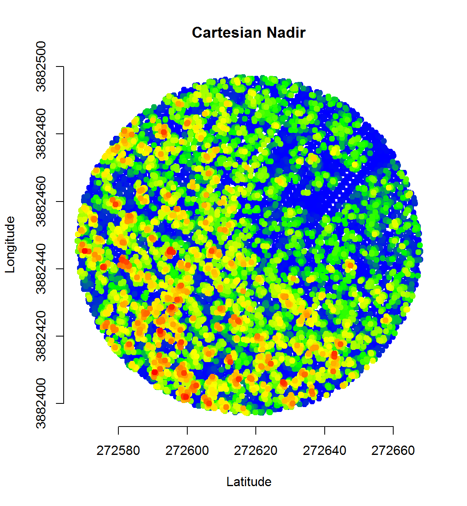
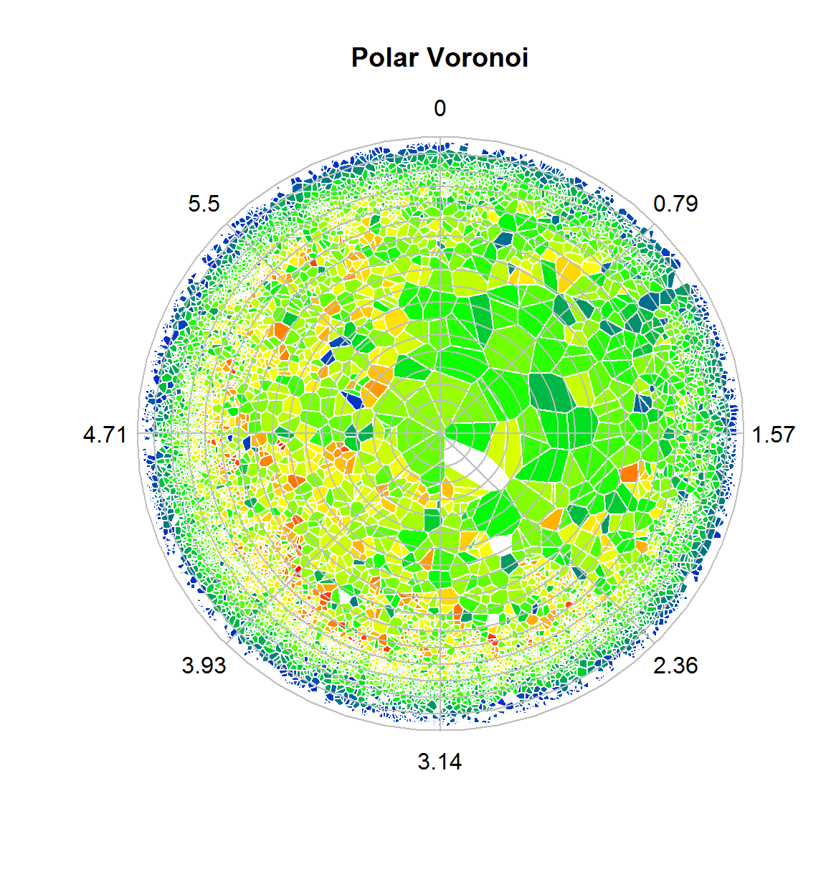
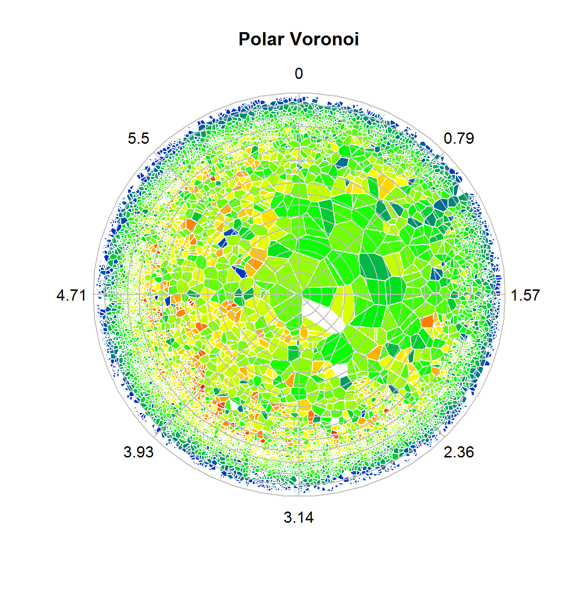
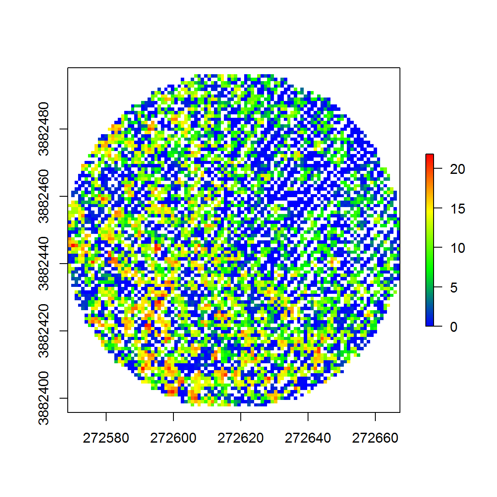
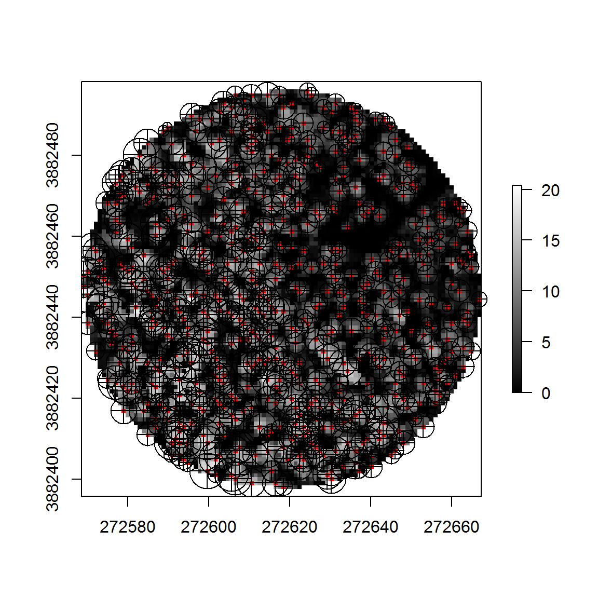

gapfraction: R functions for LiDAR metrics of canopy light transmission
“The science of today is the technology of tomorrow.” Edward Teller
The gapfraction package for R is designed for processing airborne laser scanning (ALS) light-detection-and-ranging (LiDAR) data of forests. Many functions may work for terrestrial laser scanning data too. The package was produced for a chapter of Adam Erickson’s doctoral thesis at University of British Columbia1. The package is designed to be used with LiDAR data pre-processed with LAStools2, USDA Fusion3, or the new lidR package from Jean-Romain Roussel4.
The main input to functions are LAS or LAZ format height-normalized point clouds, typically LiDAR plots corresponding to field plots. The functions are designed to accept either paths to height-normalized LAS/LAZ files or data.frame/data.table objects created with lidR or rLiDAR from Carlos Silva5 packages. Functions automatically detect whether a path or object is input for the las parameter. If using objects, the column order and naming conventions must follow those of lidR and rLiDAR.
Getting started
Installation
To install the gapfraction package, first ensure that you have a working development environment, as the package depends on the lidr package. Required software is listed below.
- Windows: Rtools.exe
- Mac: Xcode
- Linux: R development branch (e.g., r-devel or r-base-dev)
Next, install gapfraction from the R command line:
devtools::install_github("adam-erickson/gapfraction", dependencies=TRUE)Example data
After loading the gapfraction package with the library function, the example data can be loaded by calling data(las). The included data consists of fake \(X,Y,Z\) coordinates in UTM 11N and meters, along with 8-bit unsigned interger values for intensity and return number. The data consists of one 100-meter diameter LiDAR plot. Based on previous research, I recommend using plots minimally of this size for comparison to ground data (e.g., hemispherical photography) to capture edge effects.
Let’s get started!
| X | Y | Z | Intensity | ReturnNumber |
|---|---|---|---|---|
| 272568.2 | 3882445 | 10.55 | 2 | 1 |
| 272568.6 | 3882446 | 9.24 | 4 | 1 |
| 272568.7 | 3882446 | 11.76 | 22 | 1 |
| 272568.7 | 3882446 | 0.00 | 14 | 2 |
| 272568.0 | 3882448 | 6.16 | 13 | 1 |
| 272568.3 | 3882448 | 11.18 | 32 | 1 |
| 272568.1 | 3882448 | 10.30 | 26 | 1 |
| 272568.7 | 3882450 | 0.00 | 3 | 2 |
| 272568.7 | 3882449 | 0.47 | 15 | 2 |
| 272568.2 | 3882450 | 14.37 | 27 | 1 |
Once the data is loaded, you can proceed to call functions from the gapfraction package.
Example usage
Computing hemispherical Voronoi gap fraction
P.hv(las=las, model="equidist", thresh.val=1.25, thresh.var="height", reprojection=NA,
pol.deg=5, azi.deg=45, col="height", plots=T, plots.each=T, plots.save=F)## nerror = 4
## Increasing madj and trying again.
## nerror = 4
## Increasing madj and trying again.
## nerror = 4
## Increasing madj and trying again.
## nerror = 4
## Increasing madj and trying again.
## nerror = 4
## Increasing madj and trying again.
## nerror = 4
## Increasing madj and trying again.
## nerror = 4
## Increasing madj and trying again.
## nerror = 4
## Increasing madj and trying again.## [1] 0.4943591
 

Comparison of canopy height model (CHM) algorithms
chm(las)## class : RasterLayer
## dimensions : 100, 100, 10000 (nrow, ncol, ncell)
## resolution : 0.98802, 0.987822 (x, y)
## extent : 272568.5, 272667.4, 3882398, 3882496 (xmin, xmax, ymin, ymax)
## coord. ref. : NA
## data source : in memory
## names : layer
## values : 0, 21.83 (min, max)chm.sf(las)## class : RasterLayer
## dimensions : 100, 100, 10000 (nrow, ncol, ncell)
## resolution : 0.98802, 0.987822 (x, y)
## extent : 272568.5, 272667.4, 3882398, 3882496 (xmin, xmax, ymin, ymax)
## coord. ref. : NA
## data source : in memory
## names : index_1
## values : 0, 20.41133 (min, max)
Creating a pit-free CHM and performing individual tree crown (ITC) detection with the standard variable-window and watershed algorithms
mw <- itc.mw(chm, ht2rad=function(x) 0.15746*x)
wat <- itc.wat(chm, ht2rad=function(x) 0.15746*x)
Creating a stacked pit-free CHM and performing individual tree crown (ITC) detection with the hierarchical variable-window and watershed algorithms
mw <- itc.mw.h(chm, ht2rad=function(x) 0.15746*x, silent=TRUE)
wat <- itc.wat.h(chm, ht2rad=function(x) 0.15746*x, silent=TRUE)The itc algorithms store values for trees and crown.area in a two-element named numeric vector.
Please submit any issues and pull requests at the gapfraction page on GitHub at adam-erickson/gapfraction.
Erickson, A. (2017) A hybrid modeling approach to simulating past-century understory solar irradiation in Alberta, Canada. University of British Columbia.↩
LAStools: http://rapidlasso.com/lastools/↩
USDA Fusion: http://forsys.cfr.washington.edu/fusion/fusionlatest.html↩
rLiDAR: https://cran.r-project.org/web/packages/rLiDAR/index.html↩